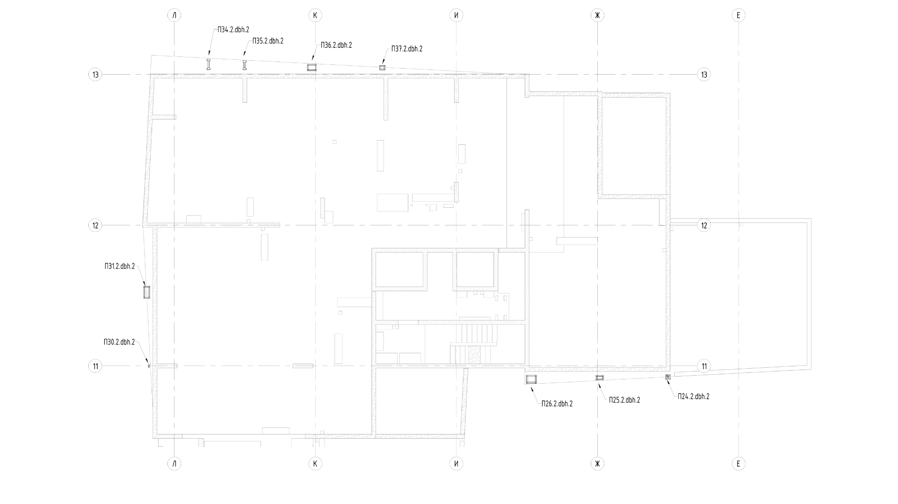
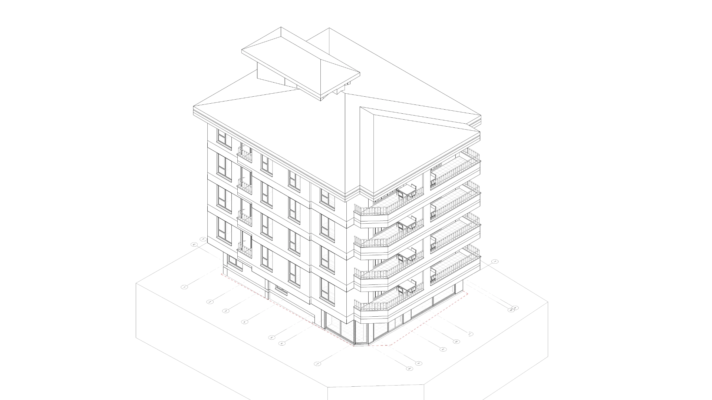
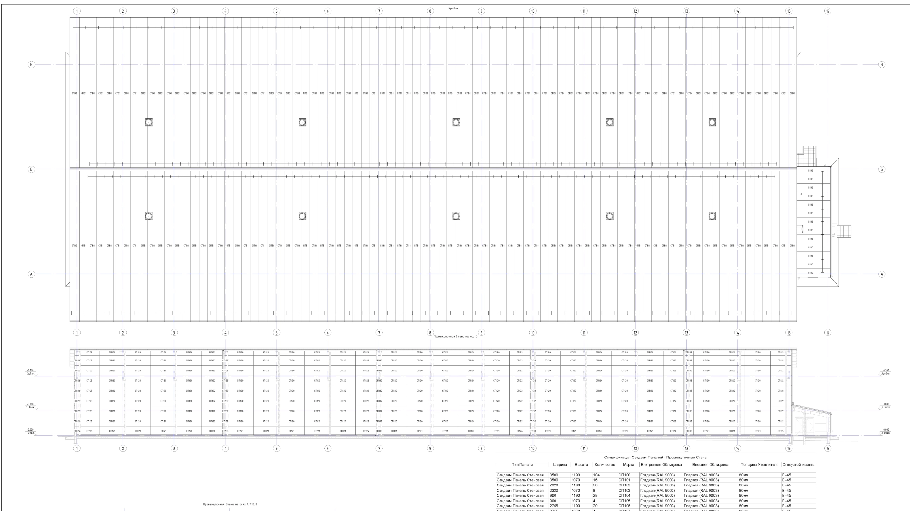
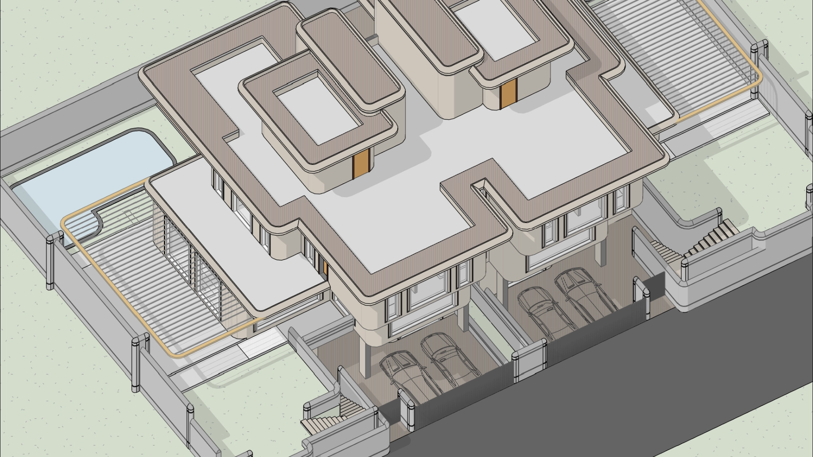
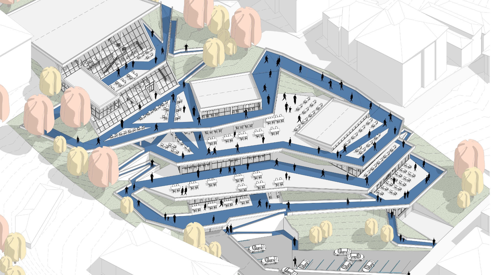
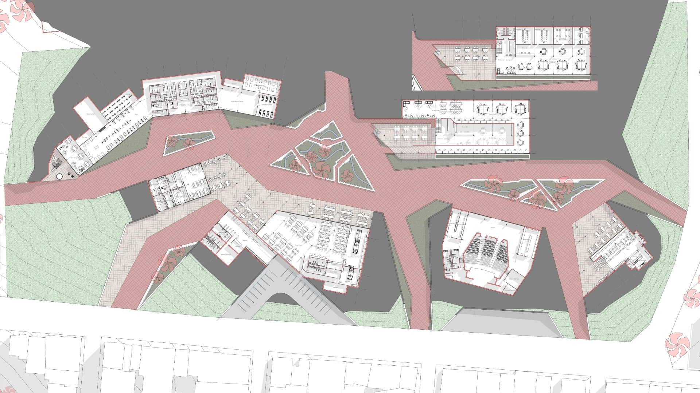

Selected Works

Mixed-Use Complex in Moscow

Permit Drawing for Residential Building

Industrial Facility Renovation

Villa Complex in Güzelbahçe, Izmir

Post-Disaster Community Learning Hub

Wellness-centered community hub
Professional Experience
Architect | Bim Manager
DBHorizon
BIM Server Administration: Set up, configured, and managed Revit Server and BIM Server infrastructure, network protocols, and access control. Established project folder structures, naming conventions, custom BIM parameters, Worksets, and team workflows.
BIM Standards & Coordination: Created custom parametric Revit Families and office-wide project templates. Developed technical documentation and shop drawings in compliance with GOST standards, ensuring cross-disciplinary model coordination.
Industrial Facility Renovation (Storage & Administrative Buildings): Developed roof connections, steel structure details, and technical documentation; conducted structural-to-architectural coordination and construction accuracy checks.
Mixed-Use Complex (Moscow): Designed and engineered the steel sub-structure / sub-framing system for hanging exterior wall panels. Developed detailed shop drawings, specifications, and automated element schedules for manufacturing, purchasing and installation.
Managing team for preparing Permit Drawings ( Ruhsat projesi ): Managing and coordinating team composed of architects and interns in process of preparing documentation for applying to get a permit ( Ruhsat ). Overseeing process of creation of Revit templates, families and materials. Managing effective collaboration and educating team regarding Revit Server collaboration workflows such as worksets.
Architect
NTT MIMARLIK
Private Villa (Bali): Developed LOD 350 BIM models, construction detail drawings, and sheet layouts under the supervision of the Senior Architect.
Residential Complex (Saudi Arabia, 10 Buildings): Managed LOD 350 Revit modeling, architectural detailing, multidisciplinary coordination, and sheet generation.
Mixed-Use Project (Saudi Arabia): Modeled LOD 400 lighting fixtures, detailed connections, and generated precise Quantity Takeoffs (BOQ).
Villa Complex (İzmir Güzelbahçe): Created LOD 200 conceptual models, diagrams, and site plans. Produced high-quality 3D architectural renderings in 3ds Max for client presentations.
Part Time Architect
NTT MIMARLIK
Pottuvil Island Resort (Sri Lanka, 120 Villas): Produced LOD 200 Revit models, architectural drawings, graphics, and presentation diagrams.
Private Villa (Bali): Assisted in early-stage LOD 350 modeling and architectural detailing.
Intern Architect
NTT MIMARLIK
Pottuvil Island Resort (Sri Lanka, 120 Villas): Assisted in early conceptual 3D modeling, spatial analysis, presentation board creation, and Photoshop plan rendering.